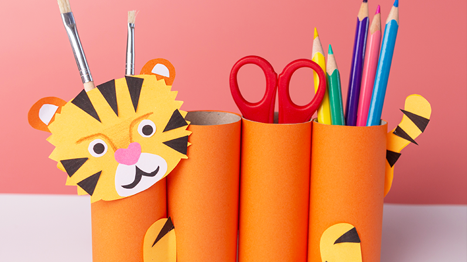

Como criar itens sustentáveis pode ser divertido?

◀ Sobre nós
Somos uma empresa júnior criada por meio de uma parceria entre estudantes dos cursos de administração e desenvolvimento de sistemas.
◀ Nosso objetivo
Ser referência em sustentabilidade e inovação no ambiente escolar, utilizando a tecnologia para valorizar o artesanato reciclável.
◀ Equipe
Gestão e Administrativo:
Ester Alves, William Lima, Yasmin Ribeiro, Luiz Henrique.
Marketing:
Francielly Tigre
Financeiro:
Lara Maria
Desenvolvedores:
Maria Eduarda, Isabella Kethellyn, Elias Pereira, Bryan Silva, Alice Trindade.